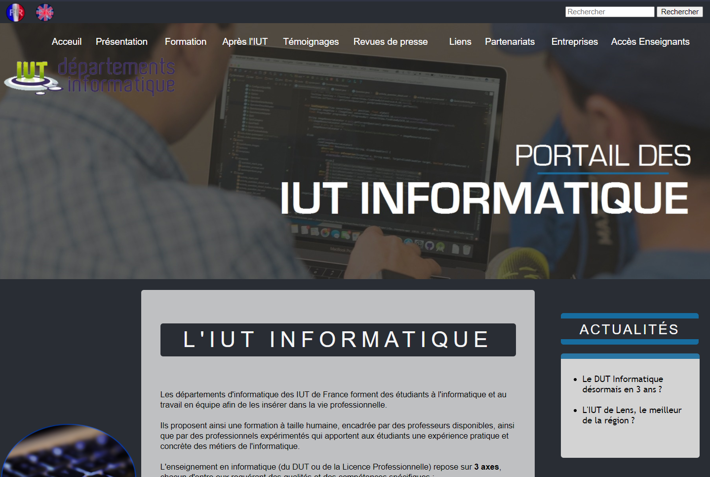
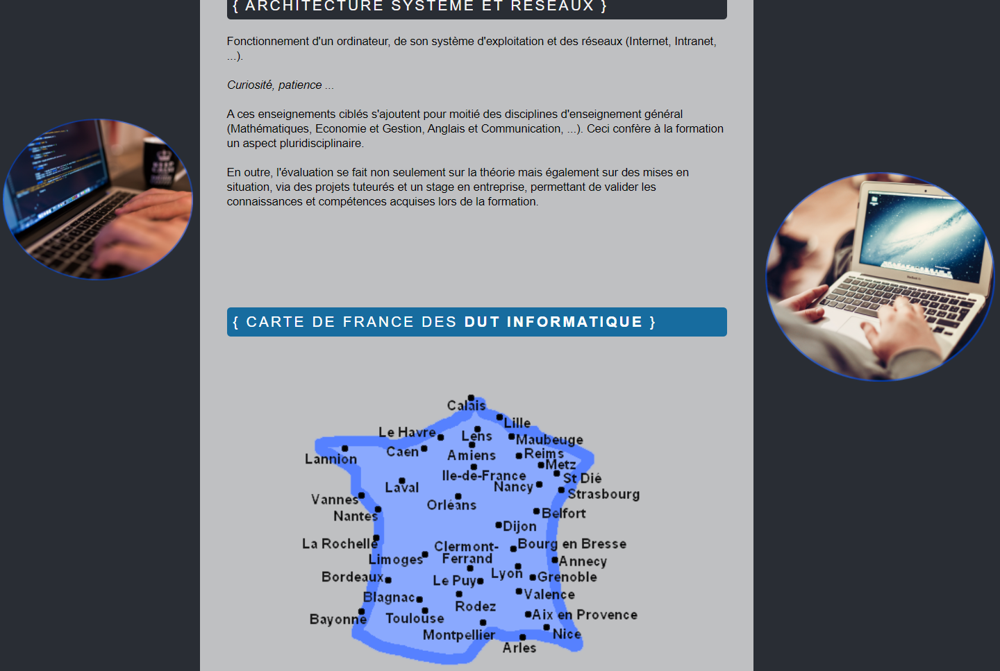
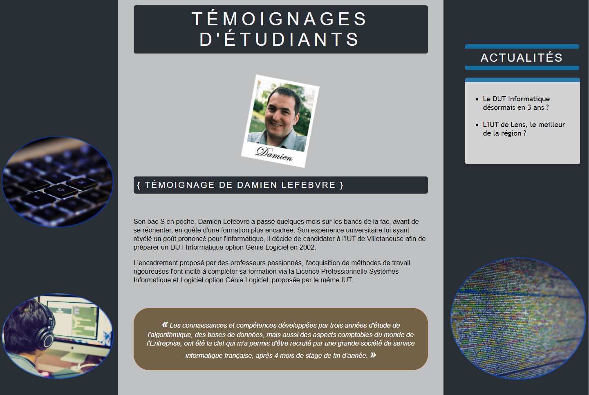
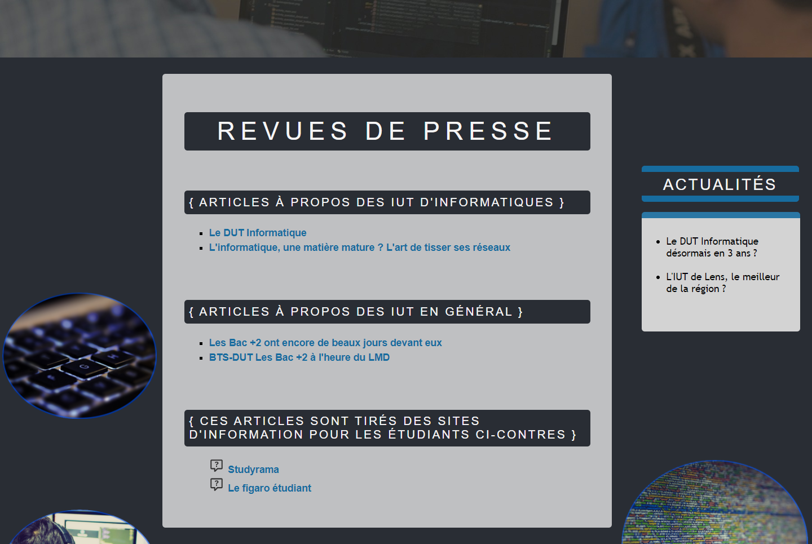
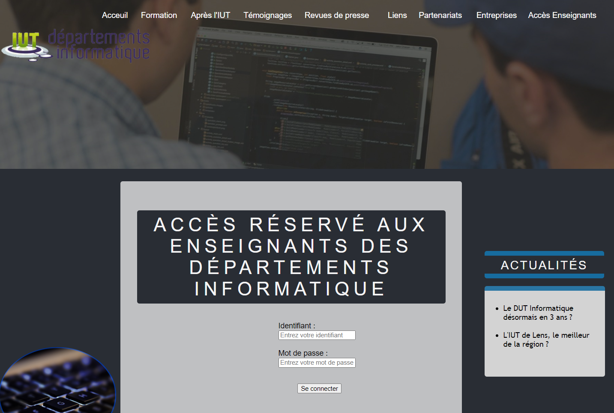

<div class="modal-dialog modal-lg modal-dialog-centered" role="document">
  <div class="modal-content">
    <div class="modal-header text-center pb-0">
      <h1 class="p-2 m-auto">Mon premier site web</h1>
      <button type="button" class="btn-close" data-bs-dismiss="modal" aria-label="Close"></button>
    </div>
    <div class="modal-body pt-2">
      <p class="text-uppercase text-center date mb-2"><i class="fas fa-calendar-alt"></i> Novembre - Décembre 2018</p>
      <p class="text-center git"><i class="fas fa-link" style="font-size: 14px;margin-right: 3px;"></i> 
        <a href="https://marie287.github.io/Mon-premier-site-web/" target="_blank">marie287.github.io/Mon-premier-site-web/</a>
      </p>  
      <div class="accordion accordion-flush" id="accordion_mps">
        <div class="accordion-item">
          <h2 class="accordion-header" id="acc_mps_1">
            <button class="accordion-button collapsed" type="button" data-bs-toggle="collapse" data-bs-target="#collapse_mps_1" aria-expanded="false" aria-controls="collapse_mps_1">
              Description
            </button>
          </h2>
          <div id="collapse_mps_1" class="accordion-collapse collapse" aria-labelledby="acc_mps_1" data-bs-parent="#accordion_mps">
            <div class="accordion-body">
              <div class="text-center">
                <i class="fab fa-html5 icon_outils" title="HTML"></i>
                <i class="fab fa-css3-alt icon_outils" title="CSS"></i>
              </div>
              <p class="text-center" style="color: #846828;">
                <span class="text-uppercase" style="letter-spacing: 1px;">Type de réalisation </span>: Projet à l'IUT de Lens
              </p>
              <p class="mb-0">
                Nous devions refaire l'ancien site web du portail des IUT Informatique, à notre manière (Front-End), en HTML/CSS . C'était un projet en équipe de 3. 
                Le design devait être amélioré, et devenir plus actuel.
              </p>
            </div>
          </div>
        </div>
        <div class="accordion-item">
          <h2 class="accordion-header" id="acc_mps_2">
            <button class="accordion-button collapsed" type="button" data-bs-toggle="collapse" data-bs-target="#collapse_mps_2" aria-expanded="false" aria-controls="collapse_mps_2">
              Objectifs
            </button>
          </h2>
          <div id="collapse_mps_2" class="accordion-collapse collapse" aria-labelledby="acc_mps_2" data-bs-parent="#accordion_mps">
            <div class="accordion-body">
              <ul>
                <li>Amélioration du design</li>
                <li>Responsivité sur tous les appareils</li>
                <li>Disponibilités en Français et en Anglais</li>
              </ul>
            </div>
          </div>
        </div>
        <div class="accordion-item">
          <h2 class="accordion-header" id="accordion_mps_3">
            <button class="accordion-button collapsed" type="button" data-bs-toggle="collapse" data-bs-target="#collapse_mps_3" aria-expanded="false" aria-controls="collapse_mps_3">
              Ce que j'en ai pensé
            </button>
          </h2>
          <div id="collapse_mps_3" class="accordion-collapse collapse" aria-labelledby="accordion_mps_3" data-bs-parent="#accordion_mps">
            <div class="accordion-body">
              <p>
                C'est donc le premier site web que j'ai créé. J'étais en première année de DUT Informatique, nous venions de commencer il y a quelques mois. 
                C'était la première fois que je manipulais l'HTML et le CSS. Je ne connaissais pas encore Bootstrap, 
                alors je peux avouer que ce site aurait pû être bien plus beau !
              </p>
              <p>
                Cependant, je peux tout de même dire qu'à la fin de mon projet, j'étais heureuse de ce que j'avais réussi à faire avec mes 
                quelques connaissances. Ce site, aux allures de débutants, m'a tout de même pris énormément de temps à faire, ce qui est tout à fait 
                normal quand on débute. C'est pareil pour tout.
              </p>
              <p>
                C'était avant tout un travail d'équipe, donc l'organisation était aussi promordiale pour savoir se répartir les tâches et se fixer des 
                objectifs communs. Dans notre équipe, ça a été tout de même été assez intuitif, et plutôt facile à mettre en place. Chaque membre de 
                l'équipe a pu apporter ses idées pour améliorer notre projet.
              </p>
              <p>Notre note était très bonne ! 😃</p>
            </div>
          </div>
        </div>
      </div>
      
      <br>
      <div id="carousel_mps" class="carousel slide" data-bs-ride="carousel">
        <div class="carousel-indicators">
          <button type="button" data-bs-target="#carousel_mps" data-bs-slide-to="0" class="active" aria-current="true" aria-label="Slide 1"></button>
          <button type="button" data-bs-target="#carousel_mps" data-bs-slide-to="1" aria-label="Slide 2"></button>
          <button type="button" data-bs-target="#carousel_mps" data-bs-slide-to="2" aria-label="Slide 3"></button>
          <button type="button" data-bs-target="#carousel_mps" data-bs-slide-to="3" aria-label="Slide 4"></button>
          <button type="button" data-bs-target="#carousel_mps" data-bs-slide-to="4" aria-label="Slide 5"></button>
        </div>
        <div class="carousel-inner">
          <div class="carousel-item active">
            
          </div>
          <div class="carousel-item">
            
          </div>
          <div class="carousel-item">
            
          </div>
          <div class="carousel-item">
            
          </div>
          <div class="carousel-item">
            
          </div>
        </div>

        <button class="carousel-control-prev" type="button" data-bs-target="#carousel_mps"  data-bs-slide="prev">
          <span class="carousel-control-prev-icon" aria-hidden="true"></span>
          <span class="visually-hidden">Previous</span>
        </button>
        <button class="carousel-control-next" type="button" data-bs-target="#carousel_mps"  data-bs-slide="next">
          <span class="carousel-control-next-icon" aria-hidden="true"></span>
          <span class="visually-hidden">Next</span>
        </button>
      </div>
    </div>
  </div>
</div>